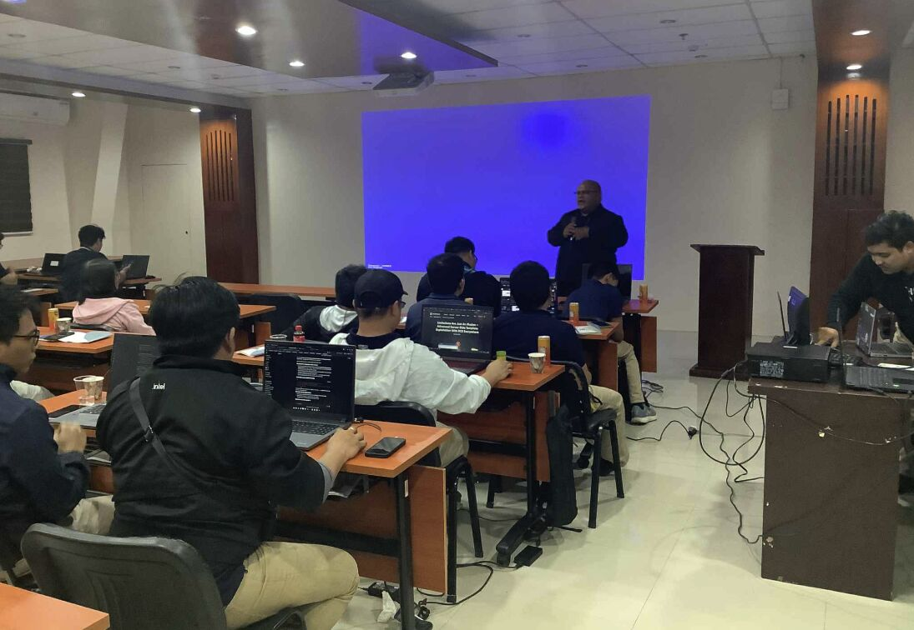

Ferdie James Nervida
Blockchain Forensics Specialist | Cybersecurity Speaker
Metro Davao | contact@ferdienervida.com | 09616570799 (Viber)
linkedin.com/in/ferdiejamesnervida |
www.ferdienervida.com
Summary
Cybersecurity specialist and public speaker with 7+ years in emerging technologies, specializing in blockchain forensics, digital asset tracing, and AI-driven threat intelligence. I lead investigative teams, develop OSINT methodologies, and deliver accessible education on Web3 and cybersecurity to both technical and non-technical audiences.
Current Engagement
City Government of Davao
5‑Day Intensive Technical Cybersecurity Training
Our team is delivering a hands-on program covering cybersecurity awareness, risk frameworks,
attacks and defenses, and incident response—culminating in a capstone simulation and a
practical cybersecurity roadmap.
Why it matters: Strengthening LGU capacity in cybersecurity safeguards citizen data and ensures resilient public services.

Experience
Blockchain Investigator | AnChain.AI | May 2023 - Present
- Managed a team of 5 research contractors to improve product reliability and data quality.
- Developed Python-based OSINT tools to identify and classify unknown wallet addresses.
- Submitted 2,800+ Web3 incident reports quarterly to assist in proactive threat management.
- Researched over 2,000 entity labels per quarter to improve AnChain.AI products.
Lead Trainer | FJN Training Solutions | Aug 2022 - Nov 2022
- Conducted cybersecurity and blockchain training for professionals and government agencies.
- Led workshops on blockchain basics, digital asset tracing, and cybersecurity best practices.
- Trained over 150 participants, enhancing their digital security skills.
Public Speaker and Trainer | 2023 - Present
- Delivered talks on blockchain and cybersecurity in Davao, Mati, Malita, Tagum, and more.
- Partnered with DICT Region XI, DOLE, City Government of Tagum, and others.
Education
- Ateneo de Davao University – Master of Public Administration (MPA), Public Policy Analysis (Units Earned)
- INSEAD – Blockchain Specialization, Business/Commerce
- Ateneo de Davao University – Bachelor of Arts in Political Science and Government
Licenses & Certifications
- AnChain.AI Certified Web3 Investigator
- AnChain.AI Certified Smart Contract Investigator
- Cyber Threat Intelligence - IBM
- Junior Cybersecurity Analyst - Cisco
- Certified Public Speaker - Public Speaking Institute
- Member - Philippine Association of Professional Speakers
- Google Cybersecurity Professional Certificate
- Google Project Management Professional Certificate
- Certified Lean Specialist - AIGPE
- Cryptocurrency for Law Enforcement - US Department of Homeland Security
- DICT Certified Trainer Level 4
- Lean Six Sigma Yellow Belt - ProcessDoctorsAcademy
Skills
- Blockchain Forensics & Threat Intelligence
- Public Speaking & Workshop Facilitation
- Python Scripting, OSINT, Data Analytics
- AI in Threat Detection (Anomaly Scoring, Risk Modeling)
Speaking Engagements
TEDxArellanoSt Speaker – “Upskill Yourself, Upgrade Your Life”
Delivered a TEDx talk on adapting to technological disruption through personal growth, introducing the four pillars: mental models, growth mindset, lifelong learning, and continuous improvement.
DICT Caraga Region Career Summit – Butuan City
Spoke to students and job seekers about career opportunities in the crypto and cybersecurity industries.
Blockchain Campus Conference 2024
Speaker on blockchain investigations and government adoption of AI-powered threat detection.
City Government of Tagum – ICT Con 2024
Presented on shadow banking and the future of finance in the Philippines.
Philippine National Police Cybersecurity Seminar
Guest speaker on emerging cryptocurrency crimes and digital asset tracing.
DICT GenConnect-PH Project
Delivered blockchain and cybersecurity training across multiple cities in Region XI.
Innovation Summit 2024 – Davao Chamber of Commerce
Spoke about blockchain and AI's impact on business and the public sector.
TESDA KORPHIL Fintech Summit
Shared insights on cryptocurrency, fintech innovations, and the role of cooperatives in digital finance.
STI Tagum Fintech Summit
Discussed cybersecurity threats and emerging blockchain career paths for students.
Department of Labor and Employment (DOLE) Region XI
Conducted cybersecurity awareness training for public sector employees and jobseekers.